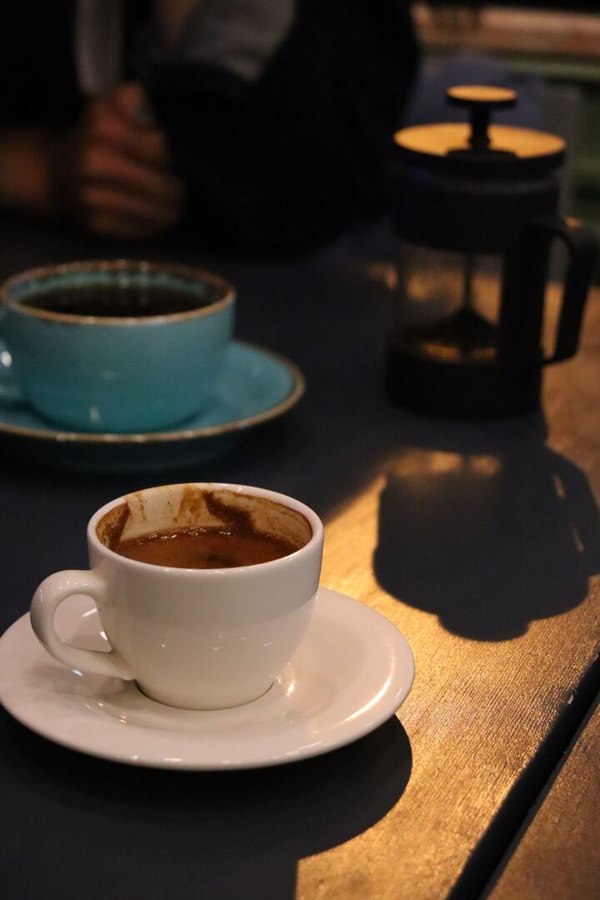

ملايين البشر حولك..ومع ذلك، لم نشعر بالوحدة أكثر من اليوم.
تطبيقات تعدك بالتواصل..لكنها تحبسك خلف الشاشة.
ماذا لو كانت مهمة التكنولوجيا الوحيدة..هي أن تخرجك للحياة؟
افهم ثقافة المكان..واسمع نبضه قبل أن تخطو إليه.
التراث والعادات
الهرم الأكبر
الجيزة · مصر
العادةمحدش بيسيب بيت مصري من غير ما ياكل أو يشرب حاجة. لما تقول "متشكر أنا كويس" ده بداية الكلام، مش نهايته.
غرفة كلام
سلام سريع قبل ما نتقابل
14:58
بتخلص في ميعادها. مفيش تمديد.
أماكن منتقاة بعناية..تنتظرك في أوقاتها الهادئة.

مقهى على الناصية
كافيه · مكان للتوضيح
شغّال دلوقتيخصم ٢٠٪
الأحد–الأربع · ٣ – ٦ م
ضغطة واحدة..وينتهي دور الشاشة.
☕ كافيه
مقهى على الناصية
٤ من ٥ أختام
اعمل check-inاتسجّلت ✓
Moments.
توقف عن التمرير. ابدأ بالحضور.
Stop scrolling. Start arriving.